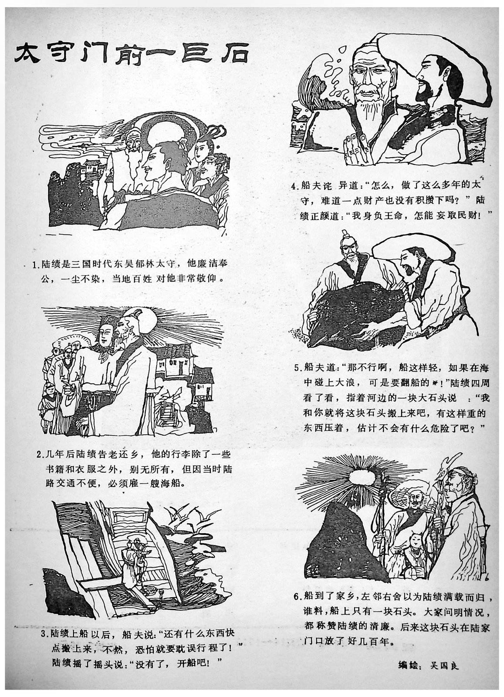

吴国良编绘 《人事》1990年第2期（总第53期），封三
太守门前一巨石
A Boulder at the Prefect's Gate
- Panel text
- 1.陆绩是三国时代东吴郁林太守，他廉洁奉公，一尘不染，当地百姓对他非常敬仰。
1. Lu Ji was prefect of Yulin in the state of Wu in the Three Kingdoms period. He was honest and devoted to the public good, spotless in conduct, and the local people revered him. - 2.几年后陆绩告老还乡，他的行李除了一些书籍和衣服之外，别无所有，但因当时陆路交通不便，必须雇一艘海船。
2. Some years later Lu Ji retired and went home. Apart from some books and clothes he had no baggage at all, but since travel by land was difficult at the time, he had to hire a seagoing boat. - 3.陆绩上船以后，船夫说：“还有什么东西快点搬上来，不然，恐怕就要耽误行程了！”陆绩摇了摇头说：“没有了，开船吧！”
3. After Lu Ji boarded, the boatman said: “If there's anything else, bring it aboard quickly, or we'll be late setting off!” Lu Ji shook his head: “There's nothing more. Cast off!” - 4.船夫诧异道：“怎么，做了这么多年的太守，难道一点财产也没有积攒下吗？”陆绩正颜道：“我身负王命，怎能妄取民财！”
4. The boatman said in surprise: “What — all those years a prefect, and you haven't saved up any property at all?” Lu Ji replied gravely: “I bore the king's commission — how could I wrongly take the people's wealth!” - 5.船夫道：“那不行啊，船这样轻，如果在海中碰上大浪，可是要翻船的！”陆绩四周看了看，指着河边的一块大石头说：“我和你就将这块石头搬上来吧，有这样重的东西压着，估计不会有什么危险了吧？”
5. The boatman said: “That won't do — with the boat this light, if we meet big waves at sea we'll capsize!” Lu Ji looked around, pointed to a big rock by the river and said: “You and I will carry this rock aboard. With something this heavy weighing us down, there shouldn't be any danger, should there?” - 6.船到了家乡，左邻右舍以为陆绩满载而归，谁料，船上只有一块石头。大家问明情况，都称赞陆绩的清廉。后来这块石头在陆家门口放了好几百年。
6. When the boat reached his home town, the neighbours thought Lu Ji had come back fully laden — but there was only a rock on board. When they learned why, everyone praised Lu Ji's integrity. Afterwards the rock stood at the Lu family's gate for several hundred years.
- 1.陆绩是三国时代东吴郁林太守，他廉洁奉公，一尘不染，当地百姓对他非常敬仰。
- Description
- Six-panel picture story: Lu Ji, an incorruptible Three Kingdoms prefect, retires with nothing but books and clothes; his boat is too light to sail safely, so he loads a boulder from the riverbank as ballast — and the boulder stands at his family's gate for centuries.
- Note
- Lu Ji (188–219), prefect of Yulin under the state of Wu, is the origin of the “ballast stone of Yulin” (郁林石), a classic emblem of official integrity.
- Artist
- Wu Guoliang 吴国良 (adapted and drawn)
- Published in
- 《人事》1990年第2期（总第53期）, inside back cover
- Themes
- Exemplary history · Picture stories (连环画)

Cite
Wu Guoliang, “太守门前一巨石” [A Boulder at the Prefect's Gate], Renshi (Personnel) 《人事》, 1990, no. 2, inside back cover.